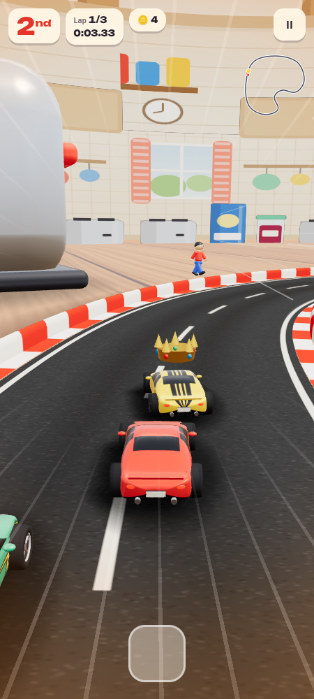
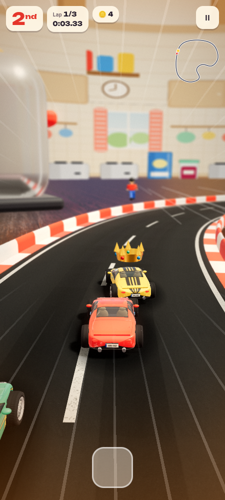
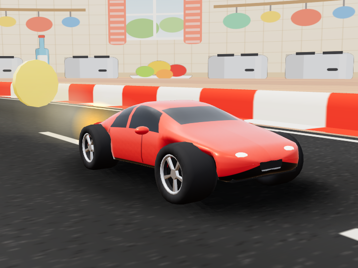
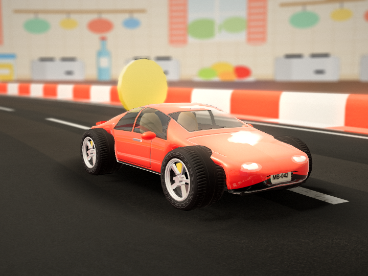
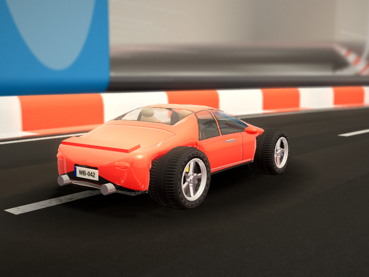
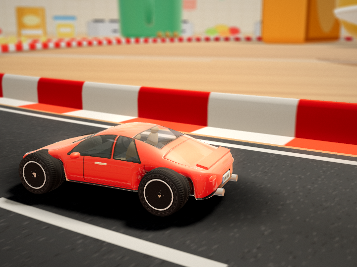
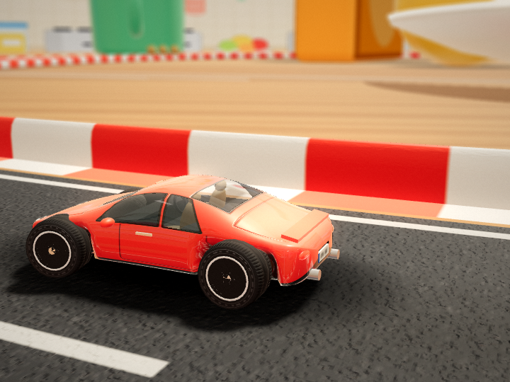
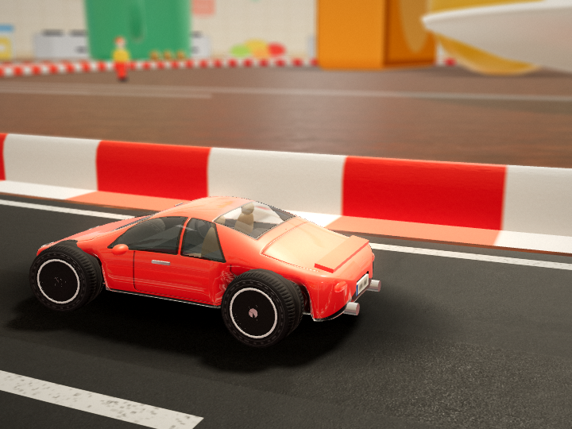
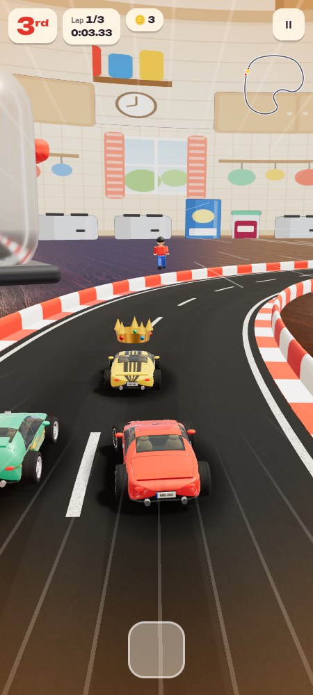

Mini Bolides — maquette « rendu réaliste »
Circuit Le Tour du Bol (Cuisine), voiture rouge. En gros plan les rivaux sont masqués. Images calculées sur le serveur, sans téléphone : la fluidité reste à mesurer sur l'appareil.
1. Vue de course
Tous les lots ensemble : voitures, lumière et reflets, matières photo, objectif.

Avantv0.9.49

Aprèslots A + B + C + D
2. La voiture de près
Peinture vernie, vitres transparentes avec sièges et volant, phares sous glace, plaque, pneus sculptés, jantes creusées avec disque de frein. Les carrosseries reflètent la vraie cuisine.

Avant

Aprèsvue avant

Aprèsvue arrière
3. Matières : le choix à faire
Table, route et vibreurs. À gauche les aplats actuels (avec la nouvelle lumière), au milieu le relief dessiné par le code, à droite les photos libres de droits (bois et asphalte, environ 3,5 Mo pour ce monde avant allègement).

Aplats actuels

Par le codeaucun poids ajouté

Photos CC0Poly Haven
4. Objectif photo
Le lointain devient flou comme sur une photo de maquette, les lumières ont un léger halo, les bords de l'image s'assombrissent.

Sanslots A + B + C
Aveclot D en plus